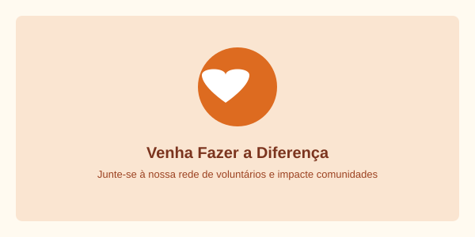

Seja bem-vindo(a) à nossa rede de solidariedade! Dedicar algumas horas do seu mês pode transformar realidades inteiras. Preencha os campos abaixo com suas informações para que nossa coordenação entre em contato.

O voluntariado é o coração de todas as ações promovidas pelo Instituto Mãos Unidas.
Formulário de Inscrição e Adesão
* Campos indicados com asterisco são de preenchimento obrigatório.